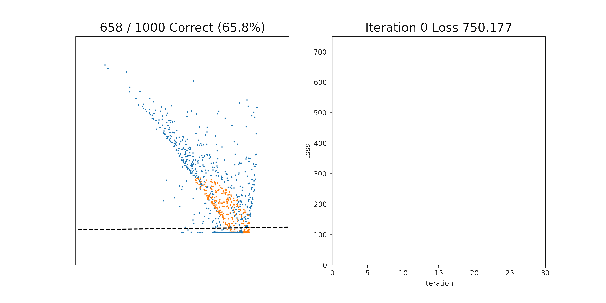
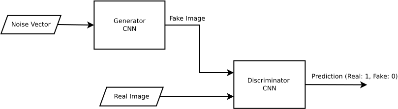
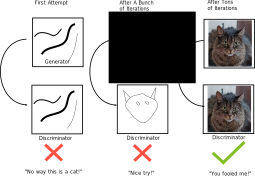

Homework 7: (Deep) Neural Networks on Images (65 Points)
Chris Tralie
Table of Contents
Learning Objectives
- Implement backpropagation for densely connected neural networks.
- Implement stochastic gradient descent.
- Explore different architectures of (deep) neural networks for different tasks.
- Implement a generative adversarial network for deep fake generation using tensorflow and convolutional neural networks
Logistics / Getting Started
In this assignment, you will implement your own neural network solver from scratch in Python. Then, you will use Tensorflow, and industry strength neural network library, to generate "deep fake" pictures of cats by training on an
Click here to download the starter code, which also includes a directory of about 15,000 cat images that you will use to create a deep fake network in part 3. When you are finished, submit the following on Canvas
neuralnet.pylayers.pydcgan.py- Your notebook for the digits classification
- Your answer to the ethics question
- Your buddy's name, if you had one
Part 1: Software Test (5 Points)
UPDATE: We have decided to use Python's CPU Tensorflow port in part 3 instead of Javascript based on the student timing results shown below

Click below to expand directions for the original test we did
To get us setup for this final assignment, I want everyone to test two different versions of tensorflow: one in Javascript and one in Python. The Javascript version uses GPU acceleration via WebGL on the backend. The Python version will default to using a CPU unless you have an NVidia GPU with CUDA configured (which is a pain, so we can probably count on it running on the CPU).
Even though the Javascript version uses the GPU for some operations, there is some overhead incurred by running in Javascript, so it's not clear which one will be faster for everyone. So I've tried to setup the same convolutional neural network for digit recognition in both Python and Javascript and to run it long enough so that we'll get significant results on timing.
To run the Javascript test, simply click here to navigate to a page that will run the test live. To run the python test, click here to download a zip file which contains the notebook Digits.ipynb (as well as all of the javasript code if you're curious). Run the Digits.ipynb notebook. Then answer the following questions on canvas
- How many seconds did the Javascript demo take? Or did it not run?
- If it ran, what was the final testing accuracy for the Javascript demo?
- How many seconds did the Python demo take? Or did it not run?
- If it ran, what was the final testing accuracy for the Python demo?
Part 2: Backpropagation from Scratch
Background
In homework 6, you implemented gradient descent to perform logistic regression. This can be thought of as learning a neural network with a single neuron, but the best we can do in this case is to learn a separating hyperplane. As we discussed in class, though, when we put a bunch of neurons together, we can learn arbitrarily complicated functions. So now we're going to take gradient descent to the next level to learn how to solve arbitrary fully connected feed forward networks using an algorithm called backpropagation as a subroutine.
Forward Pass via Matrix Operations
At this point, we could just turn to one of the myriad libraries out there like Tensorflow to optimize neural network models for us, but I want you to see if we use the right definitions, then creating a vanilla neural network solver really isn't that much code in numpy. It's also important that know how everything works under the hood when you run tensorflow (see this Medium article by Andrej Karpathy on why it's important to understand these details).
The key trick is to recast a neural network as a sequence of matrix multiplications and element-wise applications of activation functions[1]. Let's take the following piece of a network below, for instance, where the blue nodes show inputs to the orange neurons:
[1] In what follows, I'll be mostly following notational conventions from Ch. 6.5 of Deep Learning by Goodfellow, Bengio, and Courville

Let's also assume that the ith orange node has a bias bi. Assuming that the activation function for the orange neurons is a function f(u), then we could write the output of the ith neuron as
\[ a[i] = w_{0i} x_0 + w_{1i} x_1 + w_{2i} x_2 + w_{3i} x_3 + b_i \] \[ h[i] = f(a[i]) \]
But there is a much more elegant way to write transformations for all inputs if we reformulate it as a matrix expression, and this will be much easier to implement in code. In particular, define the following matrices
\[ x = \left[ \begin{array}{c} x_0 \\ x_1 \\ x_2 \\ x_3 \end{array} \right], W = \left[ \begin{array}{cccc}w_{00}&w_{10}&w_{20}&w_{30}\\w_{01}&w_{11}&w_{21}&w_{31}\\w_{02}&w_{12}&w_{22}&w_{32}\\w_{03}&w_{13}&w_{23}&w_{33}\\w_{04}&w_{14}&w_{24}&w_{34}\end{array} \right], b = \left[ \begin{array}{c} b_0 \\ b_1 \\ b_2 \\ b_3 \\ b_4 \end{array} \right] \]
Then the output of a layer in the network can be defined in two stages
\[a = Wx + b \text{, which is a linear operation }\] \[ h = f(a) \text{, which is a nonlinear operation applied element-wise to } a\]
In general, the parameters to map from the output of a layer with N neurons to the input of a layer with M neurons can be described by an M x N weight matrix W and an Mx1 bias column vector b. To propagate information through the whole network, we continually apply this sequence of linear and nonlinear operators in matrix form. We just have to store the matrix W, the vector b, and the nonlinear function f that we're using at each layer. And that's it!
In sum, below is pseudocode that describes how to do a forward pass to transform the input from each layer to the next through the entire network
Algorithm 1: Forward Propagation Through A Fully Connected Feedforward Neural Network
def forward(x)
- Let L be the number of layers
- Let h0 = x
-
for k = 1, 2, ..., L
- Let ak = Wk hk-1 + bk // Linear step. The input to this layer, hk-1, is the output of the last layer
- Let hk = f(ak) // Nonlinear step
- yest = hL // The output of the last layer is the output of our network
Forward implementation in code
I've implemented this for you already in neuralnet.py so you can see how this translates into numpy.
Notice how I changed the indexing slightly, but that otherwise it's almost a straight translation from the pseudocode. I also remember the h's and the a's in member list variables, as they will come in handy in a moment.
Backward Pass via Matrix Operations
We're now ready to express the equations to compute the gradient over all parameters in the network. These will again boil down to some matrix equations that should be fairly painless to implement in code. Though a full derivation of these equations is beyond the scope of this writeup, I will give some intuition by looking at the at a simple network with 3 neurons, each with one input and one output[2]. In particular, let's consider the following function:
\[ g(x) = f_3(w_3 f_2(w_2 f_1(w_1x + b_1) + b_2) + b_3) \]
[2] This is so that we can avoid doing matrix derivatives for the moment
In order to do updates, we need derivatives with respect to our weights w1, w2, w3 and our biases b1, b2, b3. Let's use the notation we established in the forward pass to define the following variables
- \[ a_1 = w_1x + b_1 \]
- \[ h_1 = f_1(a_1) \]
- \[ a_2 = w_2 h_1 + b_2 \]
- \[ h_2 = f_2(a_2) \]
- \[ a_3 = w_3 h_2 + b_3 \]
- \[ g(x) = f_3(a_3) \]
Then we can compute the following derivatives from the outside of the expression inwards, using the chain rule (recall that a partial derivative holds all of the variables fixed as constants except for the one we're taking the derivative with respect to)
- \[ \frac{\partial g}{\partial w_3} = f_3'(a_3) \times h_2 \]
- \[ \frac{\partial g}{\partial b_3} = f_3'(a_3) \]
- \[ \frac{\partial g}{\partial w_2} = f_3'(a_3) \times w_3 \times f_2'(a_2) \times h_1 \]
- \[ \frac{\partial g}{\partial b_2} = f_3'(a_3) \times w_3 \times f_2'(a_2) \]
- \[ \frac{\partial g}{\partial w_1} = f_3'(a_3) \times w_3 \times f_2'(a_2) \times w_2 \times f_1'(a_1) \times x \]
- \[ \frac{\partial g}{\partial b_1} = f_3'(a_3) \times w_3 \times f_2'(a_2) \times w_2 \times f_1'(a_1) \]
A pattern is starting to emerge here. In particular, notice how equation 2 is contained in part of equations 3 and 4 and how equation 4 is contained in part of equations 5 and 6. So this means we'll be able to define some recursive substitutions from layer to layer as we go along, just like we remembered outputs of layers from one to the next as we went along during the forward pass.
From the point of view of the network, the first derivatives we're able to compute are with respect to parameters at the end of the network. We can then use these expressions to substitute in for parameters in layers that precede them. We can avoid recomputing things by remembering some of the products we computed along the way. This leads to an efficient dynamic programming algorithm known as backpropagation. It earns its name since, by contrast to evaluating moving forward layer to layer when evaluating an input, we actually start with the output of the network and compute the gradients backwards layer by layer.
There's one more thing I ommitted, which is that we also define a loss function over the output, and we're really looking for the gradient with respect to the loss function. But the above gives a flavor for the patterns that emerge.
Below is the pseudocode for the matrix form of backpropagation for general feedforward networks of any shape. It may look daunting at first, but each bullet point should be a single line of code since we set up things in such an organized way with matrices.
Algorithm 2: Backpropagation Through A Fully Connected Feedforward Neural Network
NOTE: Below I refer to derivatives f' as f_deriv so that the ' doesn't get lost in the shuffle
def backprop(x, y), where x is input and y is ground truth label
After this iterates, the lists Wderivs and bderivs will be populated with matrices that hold the derivatives of all weights and biases, respectively
- Let L be the number of layers
- Call forward(x) to compute a's and h's at each layer
- Let yest = hL
- Let g = est_lossderiv(yest, y) // This is the derivative of the loss function with respect to the inputs of the last layer
-
for k = L, L-1, ..., 1
-
// Step 1: Propagate gradient backwards through the nonlinear output fk of this layer
if k < L- g = g*f_derivk(ak) // This is element-wise multiplication of g and f_derivk(ak), which are parallel arrays
-
// Step 2: Compute the gradients of the weights and biases at this layer
- Let b_derivs[k] = g // We now have the gradient for biases in this level
-
Let W_derivs[k] = g hk-1T // This is a matrix multiplication. Treating hk-1 and g as column matrices, this performs their outer product to get the gradient for each weight at this layer
// As a sanity dimension check, note that hk-1 is the output of the layer before, which is the input to this layer, and g is the gradient of the output of this layer. So if hk-1 is an N x 1 matrix and g is an M x 1 matrix, then g hk-1T will be an M x N matrix, which matches the dimensions of Wk. So each element of g hk-1T will hold the derivative of Wk's corresponding weight.
-
// Step 3: Propagate the gradient backwards through the linear part of this layer to be used at the next layer back
- g = WkT g // This is a matrix multiplication
-
// Step 1: Propagate gradient backwards through the nonlinear output fk of this layer
If yo look closely, you can match these steps up with the simple example I gave and see where the substitutions happen from one layer to the next. If you've had multivariable calculus and linear algebra and you're curious about how to derive the matrix update rules, have a look at these notes from a Stanford class on deep learning.
Task 2.1: Leaky ReLU (5 Points)
One of the issues with the logistic function (aka the "sigmoid function" in Tensorflow parlance) is that it suffers from the problem of "vanishing gradients"; if the input to the logistic function is far from zero, then it is nearly flat, as shown below:

This makes it slow to learn, as the step sizes for internal weights in the network in these regimes will be very small. To address this, there's another activation function that's very popular known as the Leaky Rectified Linear Unit (Leaky ReLU), which can be defined as the following piecewise function
\[ f(u) = \left\{ \begin{array}{cc} u & u > 0 \\ 0.01 u & u \leq 0 \end{array} \right\} \]
The derivative of this function is then
\[ f'(u) = \left\{ \begin{array}{cc} 1 & u > 0 \\ 0.01 & u \leq 0 \end{array} \right\} \]
These functions are plotted below

We've lost continuity of the derivative at the origin, but otherwise, it's great numerically and it never saturates, and you'll find that learning can happen much faster.
Your Task
Fill in the methodsleaky_relu and leaky_relu_deriv in the file layers.py to implement these functions. As you'll see in the method comments, your methods should take in numpy arrays and return the element-wise application of the leaky ReLU and its derivative at each element.
Task 2.2: Backpropagation (15 Points)
Now it's finally time to implement backpropagation.
Your Task
Study the class I've setup inneuralnet.py, and then fill in the method backprop_descent. This consists of two steps:
- Use backpropagation to compute the gradients of all of the weights and biases
- Subtract the learning factor α times these gradients from all of the parameters.
The backprop_descent method accepts as input a single training example and its target output, and it updates the weights right away. This is referred to as stochastic gradient descent, and it contrasts to the batch gradient descent we used on the last homework where we waited until accumulating gradients from all training samples before updating the weights/bias.
As I mentioned above, I have already provided a method forward to evaluate each layer of the neural network and to store the inputs a to each activation function and the outputs h of the activation function. I have also provided a method add_layer to randomly initialize all of the weights and biases (this simply boils down to calling numpy's randn to generate random matrices). So once you finish backprop_descent, you'll have a complete system to train arbitrary feedforward neural networks.
To help you test your system, I've provided the notebook DiscTest.ipynb which will learn a network to separate the points on the inside of a disc from the points on the outside of the disc, which is not something that we could do with 2D logistic regression! Dataset shown below:
To do the separation, we use a network with the following three layers:
- 100 neurons with a leaky ReLU
- 2 neurons with a leaky ReLU
- The final output neuron with a logistic activation, using the logistic loss
Using our little API, we can define this network with the following code
Then, since our API is designed to update one example at a time with backpropagation, we continuously feed it random permutations of our data one at a time. This is all in the notebook already and you can just run it. If it works properly, you should see an animation like this, where the left plot shows the 2 coordinates of the output of layer 2 as well as the linear separator inferred from the final layer, and the right plot shows the loss over time. As you can see, after a few iterations, the orange points get moved to the other side of the final linear separator from the blue points
Task 2.3: Softmax (5 Points)
Our code is definitely powerful enough to move beyond simple synthetic examples of 2-class problems, so let's move towards a more realistic application with MNist digit classification to recognize 28x28 grayscale images of digits from 0-9. What's different about this problem from any that we saw so far, though, is that it's a multiclass regression problem; our network needs to indicate which of 10 possibilities is the most likely. To do this, we'll have the output layer of our neural network consist of 10 neurons instead of just one. We can think of each neuron as indicating the probability that the input belonged to a particular digit.
To make these proper probabilities and to lead to a differentiable loss function, we're going to use a generalization of the logistic function to multi-class problems known as softmax. The softmax function is defined over an array of elements u as follows:
\[ f(u)[i] = \frac{e^{u[i]}}{\sum_{j=1}^N e^{u[j]}} \]
Notice how the denominator makes it so that all of the elements of the softmax sum to 1. Furthermore, since we've exponentiated each term, the largest value will quickly dominate the smaller values, leading to a clearer winner in the output (which is really like an indicator function on the argmax of the function). In light of the above reasoning, we can view the input to the softmax as log probabilities, and the output of the softmax as ordinary probabilities. The animation below shows the input and output of the softmax on the network you're about to train to classify the digits (Click here to view this on youtube if you want to pause on individual examples)

Your Task
Fill in the softmax method in layers.py to complete code for the softmax activation layer. Be sure to adhere to the input/output spec in the docstring.
Task 2.4: Digits Classification (10 Points)
We're now just about ready to apply this to digits! The last step is that we need to define a loss function over the output of the softmax, compared to ground truth. For this, define ground truth as an an "indicator array," or also referred to as a one-hot vector. Here are all of the possible 1-hot vectors based on ground truth
| Ground truth Value | 1-Hot Vector y |
| 0 | [ 1, 0, 0, 0, 0, 0, 0, 0, 0, 0] |
| 1 | [0, 1, 0, 0, 0, 0, 0, 0, 0, 0] |
| 2 | [0, 0, 1, 0, 0, 0, 0, 0, 0, 0] |
| 3 | [0, 0, 0, 1, 0, 0, 0, 0, 0, 0] |
| 4 | [0, 0, 0, 0, 1, 0, 0, 0, 0, 0] |
| 5 | [0, 0, 0, 0, 0, 1, 0, 0, 0, 0] |
| 6 | [0, 0, 0, 0, 0, 0, 1, 0, 0, 0] |
| 7 | [0, 0, 0, 0, 0, 0, 0, 1, 0, 0] |
| 8 | [0, 0, 0, 0, 0, 0, 0, 0, 1, 0] |
| 9 | [0, 0, 0, 0, 0, 0, 0, 0, 0, 1] |
Based on this, we can define a loss function which is a generalization of the logistic loss to multivariate output. Given the output yest of the softmax function and the ground truth 1-hot vectors y, we can define the multivariate cross-entropy logistic loss as
\[ L(y, y_{\text{est}}) = -\sum_{i=1}^N y[i] \log(y_{\text{est}}[i]) \]
where in our digits problem N = 10. We need to take the gradient of this loss with respect to the input to the logistic function, but this is actually incredibly simple and exactly like the single variable logistic loss case. In particular, the gradient of the ith component to the input of the softmax function is simply yest[i] - y[i]! This should look pretty familiar! (Look back to the update rules in the last assignment). To save time, I've already implemented this for you. The loss function and its derivatives are the methods softmax_est_crossentropy_loss and softmax_est_crossentropy_deriv, respectively, in the losses.py file.
Your Task
Put everything together in a Jupyter notebook to train a neural network in our little API that classifies digits in the MNist dataset. Train a network using stochastic gradient descent on the training set for 60 iterations, and report the accuracy on all of the images in the test set. You should compare two networks: the first network should have a single hidden layer with 20 neurons and a softmax output, which you can define like this: The second network should also start with a hidden layer with 20 neurons, but you should add an additional ReLU layer with 40 neurons. Indicate clearly in your notebook which network works better and why you think this is.Loading data
Tensorflow has this dataset built in, so we'll use it just for a moment to load it in:
Part 3: This Cat Doesn't Exist (aka "Deep Fakes")
Let's now jump into tensorflow to do something more complicated with convolutional neural networks. We're going to look at a very interesting unsupervised technique known as a Deep Convolutional Generative Adversarial Network (DCGAN) that will learn how to generate fake images that fit the distribution of a set of training images. Somehow, by the end of this exercise, we're going to feed a random vector to a network, and it's going to spit out an image that looks like a cat.
The GAN, devised by Goodfellow et al back in 2014, accomplishes this feat by putting two networks into competition with each other. The first network, known as the generator, takes as input a "noise vector" (a vector of random numbers) and outputs a counterfeit image. The second network, known as the discriminator, compares these fake images to real images in the training set and classifies them as real (1) or fake (0). The schematic below shows this visually As the training goes along, we try to minimize the sum of two losses, one for each network:
- The generator loss penalizes fake images outputted by the generator that are classified as fake. So the generator is incentivized to improve the quality of its counterfeit images over time.
- The discriminator loss penalizes fake images that are classified as real and real images that are classified as fake. In this way, it learns to get better and better at telling counterfeits from fakes.
The learning proceeds by taking steps to minimize the loss over steps 1 and 2 over and over again in a loop. What's interesting is that as the generator improves, the loss of the discriminator goes up, and it must improve, and vice versa. So they keep going back and forth in competition and improving each other. Eventually, the generator will start creating new images out of thin air that look like they might belong to the distribution of the training set. The cartoon picture below shows something like what me might expect:
Your Task
In this part of the assignment, you will use roughly 15,000 64x64 grayscale images of cats to train a simple GAN in Tensorflow to generate fake cat images. You will edit a few methods in the file dcgan.py, and you will run the results in the notebook CatsGAN.ipynb. If this works properly, you will see "cats emerging from the noise" like so after about 40 iterations
Before you proceed, you might want to review the Tensorflow Cat/Dog classifier from class, as well as the Tensorflow Cat Autoencoder (you'll see at the bottom of this example that out of the box autoencoders don't work well for generation of new examples!). Once you get the syntax down, this part of the assignment should be among the more straightforward things you've done in this class.
Task 3.1: Generator Network (7 Points)
For the first task, fill in the make_generator method to create a generator network with the following architecture:
-
A Dense layer with no bias taking the dimension of the noise vector,
(self.noise_dim,), as the input shape, and which outputs to enough neurons to fill up the pixel shape in step 4 - Batch Normalization
- Leaky ReLU
- A Reshape layer to reshape the dense outputs to a quarter resolution of the original image, with 32 channels. (The reason we do a quarter of the resolution is that we have two deconvolutional layers after this, each which upsamples by a factor of 2).
- A Conv2DTranspose with no bias at a kernel size of 5x5 and a stride of 2, up to 32 channels, with padding "same." This is convolution in the other direction, or "deconvolution"; it upsamples the image by a factor of 2 with overlap/adding
- Batch Normalization
- Leaky ReLU
- Conv2DTranspose with no bias at a kernel size of 5x5 and a stride of 2, down to a single channel, with a tanh activation (this has a similar shape to the logistic function) and a padding of "same." This is the output layer that will generate the final counterfeit image.
If you've done this properly, when you initialize the network and feed it a random vector with the following code
Then you should get an image like below:

Since the weights are initialized randomly and no training has happened yet, the image has no structure
Task 3.2: Discriminator Network (7 Points)
Now we're going to make the discriminator. This is a lot more like the example we did in class telling cats apart from dogs, since they are both binary classification problems on images. But to keep our training time reasonable, we're going to use a simpler network. To keep symmetry with the generator, we will also avoid doing any max pooling. Implement the following architecture in the make_discriminator method:
- A Conv2D layer with a 5x5 kernel size and a stride of 2 to 32 channels.
- Leaky ReLU
- Dropout of 0.3
- A Conv2D layer with a 5x5 kernel size and a stride of 2 to 64 channels.
- Leaky ReLU
- Dropout of 0.3
- A Flatten layer to reshape the input to be 1 dimensional
- A Dense layer that outputs to a single neuron, which is the output classification.
Task 3.3: Discriminator Loss (7 Points)
If have provided code to implement the generator loss in the generator_loss method. Study this, and create a similar method to implement the discriminator loss in the discriminator_loss method.
Once you have finished this, you'll have all of the pieces to a working GAN (including the code I provided to setup a training loop). Go ahead and run the CatsGAN.ipynb notebook and see if it works!
Task 3.4: Ethics (4 Points)
It's kind of amazing that with relatively little effort we were able to create a system from scratch to create fake images, and this has gotten a lot of press over the past few years. Reflect on the dangers of having this technology be so accessible. What are possible countermeasures to this technology?